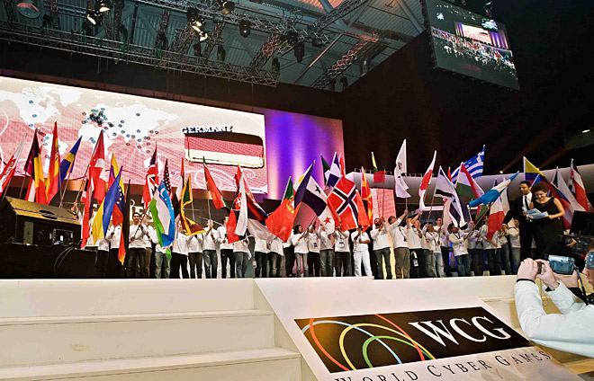

Киберспорт (также известен как «компьютерный спорт» или «электронный спорт», англ. esports) — командное или индивидуальное соревнование на основе видеоигр. В России признан официальным видом спорта.
Все киберспортивные дисциплины делятся на несколько основных классов, различаемых свойствами пространств, моделей, игровой задачей и развиваемыми игровыми навыками киберспортсменов: шутеры от первого лица, стратегии в реальном времени, спортивные симуляторы, автосимуляторы, авиасимуляторы, файтинги, командные ролевые игры с элементами тактико-стратегической игры.
История развития киберспорта
До того как появились официальные киберспортивные лиги, имели место небольшие соревнования в играх, где проводился подсчет очков.(Spacewar, Asteroids, Space Invaders)
В 1996 году появляется EVO (изначально имел название Battle by the Bay), проводящий турнир по игре Street Figh ter II.
Позже, в 1997 году была основана CPL, которая сделала первый турнир в дисциплине Quake. Но первой игрой с возможностью кооперативной схватки была Doom 2.
Появление киберспорта в РФ
Россия стала первой страной в мире, которая признала киберспорт официальным видом спорта. Это произошло 25 июля 2001 года по распоряжению тогдашнего главы Госкомспорта России Рожкова Павла Алексеевича. После смены руководства и переименования Госкомспорта России в Федеральное агентство по физической культуре и спорту, а также в связи с последующим введением в действие Всероссийского реестра видов спорта (ВРВС), потребовалось повторить процедуру признания компьютерного спорта 12 марта 2004 г. по распоряжению главы Госкомспорта России Вячеслава Фетисова. В июле 2006 г. киберспорт был исключён из Всероссийского реестра видов спорта вследствие того, что он не соответствовал критериям, необходимым для включения в этот реестр: развитие в более чем половине субъектов Российской Федерации и наличие зарегистрированного в установленном порядке общероссийского физкультурно-спортивного объединения.Киберспортивные организации существуют в нескольких странах СНГ, включaя Белоруссию, Кaзaхстaн и Укрaину.
Первые крупные киберспортивные турниры
World Cyber Games
2001 год – еще один большой прорыв в киберспорте, который был связан с компанией Samsung Electronics, компания внедряет проведение первого в мире глобального турнира по компьютерным играм – World Cyber Games (WCG). Общий призовой фонд мероприятия составляет небывалую и неслыханную по тем временам сумму в 600 тысяч долларов.
Официальными играми чемпионата, проходившего в 2001 году в Южной Корее стали:
— Counter Strike 1.6
— Unreal Tournament
— Quake III Arena
— StarCraft: Brood War
— Age of Empires II: The Conquerors
— FIFA 2001
В чемпионате приняли участие 430 геймеров из 33 стран мира.
Призовой фонд: 300 000 долларов
Победителю в каждой из дисциплин чемпионата доставалось:
1 место – 20 000$ (40 000$ в Counter-Strike)
2 место – 10 000$ (20 000$ в Counter-Strike)
3 место – 5000$ (10 000$ в Counter-Strike)
Интересной особенностью проведения турнира стали квалификации в каждой стране, только победитель квалификаций от своей страны посещал главный турнир года. WCG можно считать аналогом Олимпийских игр в киберспорте.

Всемирные киберигры, знакомые практически всем русскоязычным любителям компьютерного спорта как WCG, ведут свою историю с 2000 года.
WCG считается одним из самых старых и по-настоящему массовых турниров по компьютерным играм. За обширную географию и достаточно большой набор дисциплин турнир практически сразу же нарекли киберолимпиадой.
Яркая церемония открытия и даже собственный гимн также добавили соревнованиям олимпийского лоска.
С 2000 по 2013 год финал World Cyber Games пять раз проходил в городах Южной Кореи, где зародились соревнования. Тем не менее главное событие года в мире киберспорта (а WCG, безусловно, считался таковым в начале нулевых) успело трижды погостить в США (в Сан-Франциско, Сиэтле и Лос-Анджелесе) и дважды в Европе (в Монце и Кёльне).
Набор дисциплин в рамках WCG был достаточно обширным: от популярных Quake, Counter-Strike, FIFA и StarCraft до достаточно экзотичных Age of Mythology и Carom3D. Примечательно, что на турнире кроме PC-игр были представлены консольные и даже мобильные проекты вроде гонки Asphalt.
В 2013 году главный спонсор этой турнирной серии корпорация Samsung потеряла интерес к своему маркетинговому детищу. В феврале 2014-го исполнительный директор WCG Брэд Ли объявил о закрытии оргкомитета и завершении игр. По информации, просочившейся в прессу сразу от нескольких партнёров турнира, работать с Ли и его коллегами из года в год становилось всё сложнее, а турнир уже не вызывал того ажиотажа и внимания среди поклонников киберспорта, как в начале нулевых.
Тем не менее до сих пор WCG остаётся одной из самых памятных серий турниров, с которой во многом связаны и успехи российского киберспорта периода становления: золотые медали Антона «Сooler» Синьгова в дисциплине Quake и легендарная победа M19 — команды по Counter-Strike из Санкт-Петербурга, которой Андрей Лошак (в то время корреспондент НТВ) посвятил один из сюжетов программы «Намедни».